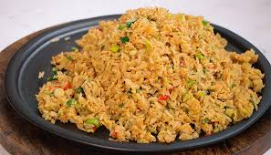

Questions and Answers:

Q1: Can I use freshly cooked rice to make fried rice?
A1: It’s not recommended. Freshly cooked rice is too moist and sticky. Day-old rice works best because it’s drier and fries better without getting mushy.
Q2: What kind of rice is best for fried rice?
A2: Long-grain rice like jasmine or basmati works best. It stays fluffy and separates nicely when stir-fried.
Q3: Do I need a wok to make fried rice?
A3: Nah, A large non-stick or stainless steel frying pan works just fine, just make sure it gets hot enough.
Q4: How do I keep fried rice from getting soggy?
A4: Use cold, dry rice. Also, don’t overcrowd the pan, cook in batches if needed so the rice fries, not steams.
Q5: How long does leftover fried rice last?
A5: In the fridge, it lasts up to 3–4 days if stored in an airtight container. Reheat it thoroughly before eating.
Go Back